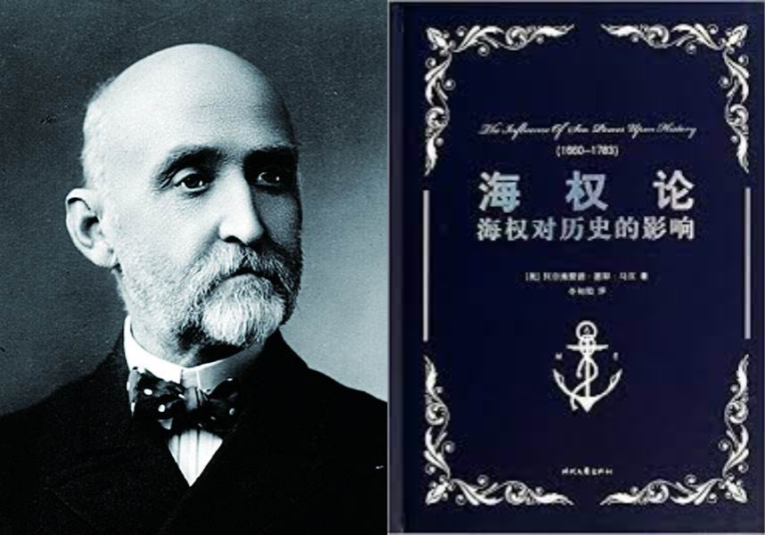

收录于合集

导读
国际社会能否理解中国理念、了解中国文化、看懂中国故事，很大程度上取决于“中译外”的翻译水平。其中，政治、经济、文化领域关键词的翻译则尤为重要，不仅是决定对外传播效果的直接因素和基础条件，也是衡量传播能力和文化软实力的重要指标。
本文以海权这一概念为例，介绍了当前中英文跨文化互译中的概念误读现状。一百多年前的 _ The Influence of Sea Power upon History: 1660-1783_ 被译为《海权论》，作者马汉也被誉为“海权论”鼻祖，此书更是被奉为“海权理论”圭臬。而如今基于国际海洋安全局势紧张、国家海洋主权权益频遭挑战、“海洋强国”建设已成为国家战略的大势需要，我国相关学界、知识界关于维护“海权”、强化“海权”的主张、呼吁声浪日高。 此“海权”是否是彼“海权” ？
作者认为， Sea Power的原文原义是海上军事力量、海洋军事霸权，而当今我国进行的“海洋强国”建设中的海权，指的是海洋权利，包括海洋主权和相关权益，这显然与Sea Power的原文原义南辕北辙 。作者强调，古今中外跨文化翻译传播中诸如此类的误译很可能影响一国决策甚至于国际格局， 学界尤其是译介者、传播者应该保持高度警醒，一方面力避误译的出现，一方面及时纠正误译的存在 。中国亟须在跨文化译介传播中，使用自己的话语，建构自己的话语体系。欧亚系统科学研究会特编发此文，供读者思考。文章原刊于《读书》，仅代表作者本人观点。

马汉与《海权论》。图源：互联网
01
马汉所说的“sea power”＝“海权”吗？
近二三十年来，基于国际海洋安全局势紧张、国家海洋主权权益频遭挑战、“海洋强国”建设已成为国家战略的大势需要，我国相关学界、知识界关于维护“海权”、强化“海权”的主张、呼吁声浪日高。在此背景下，早在一百多年前就已翻译引进的美国人马汉（Alfred Thayer Mahan）1890年出版的 The Influence of Sea Power upon History：1660-1783 一书被高度重视起来，再三重译出版，且几乎都译名为《海权论》，誉马汉为“海权论”鼻祖，奉此书为“海权理论”圭臬。一个直接的原因，是马汉的书名及其内容用了一个关键词 sea power，而 sea power 今被普遍翻译成中文的“海权”，并在我国被高热度关注和解读，高频率使用和传播，广泛接受和认同。至于马汉原书本是西方海战历史研究的著作、中文版应该译为什么书名，反而少有人顾及。
我国重视海权问题，是国家海洋战略和国际海洋形势使然。问题在于， 人们虽然把“海权”概念的“知识产权”送给了马汉，但马汉所说的“sea power”＝“海权”吗？非也 。
02
中文与外文概念语义的错位
中英文两种语言之间的翻译，是两种语言—文化系统之间的跨文化转换，往往存在着“不可译”的问题 。早在二十世纪三十年代，鲁迅就在他的《“拿来主义”》中，针对不同语言和文化权力关系的不平等，阐述了他的包括翻译立场在内的文化立场。鲁迅主张的是批判地借鉴外来文化，亦即半个世纪之后美国学者斯皮瓦克（Gayatri Chakravorty Spivak）所说， 翻译者必须以“硬译”去“贴合原文” （Outside in the Teaching Machine, Routledge, 1993）， 从而将本来“不可译”的异质文化“拿来”，让读者了解对方原本是什么，以便于决定是取是舍，是扬是弃 。但是，中国的翻译后来的现实，却与鲁迅、斯皮瓦克的主张相反，正如学者孙歌所说 ：“走的是从一种语言里为我所用地搬运内容到母语里来的路。”（孙歌 ：《语言与翻译的政治·前言》，中央编译出版社2000年版）这样的拿来主义，往往变成了对原文的改造，从而使经过改造的“译文”—而非原文原义—成为人们接受的“知识”本身 ；而恰恰由于这种“伪知识”冠以“翻译”之名，“来自”外国，尤其是西方，特别是英美，往往比“土产”更容易被认同、赞赏、信奉，更容易成为“真理”。至于它在西方那里原本是什么，则少有人追问；由于如此翻译而有可能造成的中文与外文概念语义的错位，导致的误读误解，甚至引发的中外话语冲突乃至国际争端，更少有人意识到与翻译的干系。 sea power 与“海权”的互译包括回译的概念错位，在中西跨文化间导致的误读误识及其引发的诸如西方的“中国威胁论”炒作，就是一个凸显的案例 。
本来，马汉一百多年前出版的 The Influence of Sea Power upon History：1660-1783 ，是他在美国海军学院院长任上写的一本讲解西方海战历史战例的书。该书选取、分析了一六六○至一七八三年间发生的一系列重要海战战例，结论是： 一国海上军事力量的大小强弱、布局调用、战略谋划与战术发挥，对于一国的崛起与衰落十分关键、重要；要实现海上霸权，重中之重是要有一支强大的海上舰队 。此书甫出，很快受到美国和其他西方国家以及日本的重视，进而奉为发展海上军事、夺取海洋霸权的重要“经典”，纷纷采纳为各自国家的战略决策并付诸行动，从而引发了第一次世界大战的“列强”之间的海上军备竞赛，美国也因之很快成为以海上军事力量为主要标志的超级霸权大国。
该书出版后被不断解读、译介，其中 sea power 是凸显的关键词。在英语和西方语系中，sea power 并不是一个新词，语义明确，无需解读，马汉没有，也不需要下一番定义。他在该书“序言”中也用 maritime strength 一词，可见 power 与 strength 的同义内涵。 因此，无论就该书的书名还是内容来说，sea power 中文直译就是“海上力量”，意译就是“海上军事力量” ，书名的中文翻译完全可以，而且应该名实相副地直译为《海上力量对历史的影响：1660—1783》，或意译为《海上军事力量对历史的影响：1660—1783》。但事实却非如此。
03
将 sea power 译为“海权”是不恰当的
将 sea power 汉译为“海权”，已有不少人考证说源自日本对马汉书的翻译，但似是而非。“海权”一词的中文译介，最早出自李凤苞一八八五年在天津机器局出版的译著《海战新义》，署原著者为“奥国普兰德海军军官学校教习阿达尔美阿”。书中有“从前分各国之海权强弱为一二三等，今则不便分等第”，“凡海权最强者，能逼令弱国之兵船出战”等语。该译所据原书今已不考，原为何种文字、译文“海权”原为何词，已不得而知。但观其文义，应该是“海上权势”的略称，指的无疑就是“海战力量”，亦即“海上军事力量”。
五年之后，一八九○年，马汉之书才在美国出版。直至一八九六年，才有了日本军令部的译本，名《海上权力史论》，东邦协会出版。 值得注意的是，该译本是将马氏 sea power 译为“海上权力”的，并非“海权”。但在中国，“海权”一词继李凤苞之后照旧使用 。一八九八年，严复在《拟上皇帝书》中有“盖英之海权最大，而商利独阂”之语。一九○三年，梁启超胞弟梁启勋在《新民丛报》上发表《论太平洋海权及中国前途》，向国人疾呼“故欲伸国力于世界，必以争海权为第一义”。一九○五年，一篇《论海权》刊载在《华北杂志》第九卷上。一九○九年，严复在其翻译出版的孟德斯鸠《法意》的按语中有云 ：“往读美人马翰所著《海权论》诸书，其言海权，所关于国之盛衰强弱者至重。”说明严复在多年前就读过马翰（汉）之书，《海权论》书名是他自己的译创还是本有所据，今已难考。
今见马汉该书在中国的首译出版，是一九○○年笔名“剑潭钓徒”者在上海《亚东时报》第二十、二十一两期上对第一章第一节的连载，署原著者为“北美海军参将马鸿”，其中第二十期译书名为《海上权力要素论》，第二十一期改为《海上权力论》，并以该期译文内容作为副题“论地理有干系于海权”，可见 sea power 多被译为“海上权力”，也略称为“海权”。该刊此后停刊，译事不见下文。一九一○年，中国留日海军学生创办《海军》杂志，又刊载了中国人齐熙的中译本《海上权力之要素》，但该杂志也未能持久，译文只连载到马书的第一章第二节。不过据该杂志刊登的广告，是曾计划全部翻译并出版单行本的，广告中所用书名为《海上权力史》。
值得注意的是，中日早期的翻译，都是将 sea power 译为“海上权力”的。应该说，这算是较为接近 sea power 原义的，但也并非准确、恰当。 在中文语境里，作为正面论述的“权力”，应当是正当、合法、正义的权力，而马氏暨西方所强调、崇尚的 sea power，则是各自为海上控制、海上争夺、海上霸权而发展的海上军事力量，全无正当、正义、合法可言，汉译实在不应该用“权”或“权力”称之 。这是东西方文化的价值观不同所致。
由此可见，无论是中译还是日译，无论是早期的翻译还是现今的重译，将 sea power 译为“海权”“海上权力”，都是不恰当的，是误译，由此造成了概念的错位。
04
概念语义的错位导致相互误读
正是由于中英文跨文化译介的不对应性，英文“拿来”翻译为汉语、生成汉语概念之后，如不做特别处理，就会很快“归化”为汉语语境本有的概念和语义 。事实正是如此。sea power 之类的西文概念被译介为中文“海权”后不久，近代中国人的有关论说，就开始越来越多地用以称指包括海洋主权、事权等的“海洋权利”了。譬如近代著名实业家、教育家张謇，早在一九○五年前后，就频率很高地使用“海权”一词了，如说“渔权即海权”，“海权界以领海为限，领海界以向来渔业所至为限”，“渔界所至，海权所在也；海权在国，渔界在民；不明渔界，不足定海权”，“不伸海权，不足保渔界 ；今立渔业公司之本意，首保海权，次保渔利；护渔权，张海权”等等。这些“海权”所指，都是海洋主权和海洋渔权等相关权利。再如“华侨领袖”陈嘉庚，身在南洋时就回国兴办渔业教育、航海教育，提出的主张有“兴海洋，挽海权，首应培养航海人才 ；力挽海权，培育专才；振兴航海，巩固海权，一洗久积之国耻”等，这些“海权”所指，也都是具体的海洋权利。
如此，显而易见，中文“海权”的概念语义便有了 A、B 两个。
·A 指的是海上军事力量、海洋军事霸权，对应的是 sea power 的原文原义，但缺失的是中国文化的正义、道义价值观内涵；
·B 指的是海洋权利，包括海洋主权和相关权益——而这显然与 sea power 的原文原义南辕北辙。
要之，sea power 甫一译介便归化为中文的“海权”一词，这个“权”字就具有了概念上的歧义—— 若指权力，则无正当正义性，除了西文的译介和接受者外，中国人大多不会如此理解和使用；若指权利，则大非sea power 原义，“海洋权利”大致对应的是 sea rights 。前引张骞、陈嘉庚等当年的“海权”论说，直至今日面对我国南海、东海海洋和岛屿主权、权益形势，国人普遍呼吁“保我海权”，说的也同样都是保卫、保护我国的海洋权利、海洋权益，所言均非 sea power 的英文本义。正如张文木《论中国海权》所说 ：海权之“权”即权利，包括权益。
这种跨文化译介传播中原文原义与译入语概念语义的错位，导致的是跨文化间的相互误读 。中国人汉语语境里所说的提升海权意识、发展强化海权，“海权”一词指的就是海洋权利、权益，基本对应的英文概念是 sea rights；但中国学界又似乎都知道“海权”一词自马汉 sea power 译来（尽管事实上早于马汉），于是就都认定“海权”的英文对应词就是 sea power，于是就在国际平台、国际语境尤其是英文语境中都将其回译成了 sea power，而不用 sea rights。 如此的结果，就是外国读者尤其是西方读者“自然而然地”将来自中国的 sea power 误读误解成其英文语境中的海上军事力量、海上霸权，认定中国在发展海上军事、谋求海洋霸权，从而成为其“中国威胁”论的口实 。
跨文化译介传播中译出概念与译入概念的错位，以至于驴唇马嘴，南辕北辙，导致误解误读，无疑是因为翻译的不确甚至错误，亦即误译造成的。 古今中外跨文化翻译传播中诸如此类的误译常见，甚至可以说是普遍现象，但对于重要的、关键的、有可能带来大的影响效果的，甚至影响一国决策、影响国际格局的概念、观念、话语的译介，学界尤其是译介者、传播者应该保持高度警醒，一方面力避误译的出现，一方面及时纠正误译的存在 。所谓“拿来”，须知拿来的到底是什么；所谓“让中国文化走出去”，发出中国声音，讲好中国故事，须让世界了解中国话语的本意。为此，中国亟须在跨文化译介传播中，使用自己的话语，建构自己的话语体系。
文章简介 ****
来源： 《跨文化互译中的概念误读——以海权为例》，《读书》，2021年第12期。
作者： 曲畅，中国海洋大学博士研究生；任东升，中国海洋大学外国语学院教授。
排版 | 何婕
本文章来源于“欧亚系统科学研究会”
文章观点不代表本平台观点